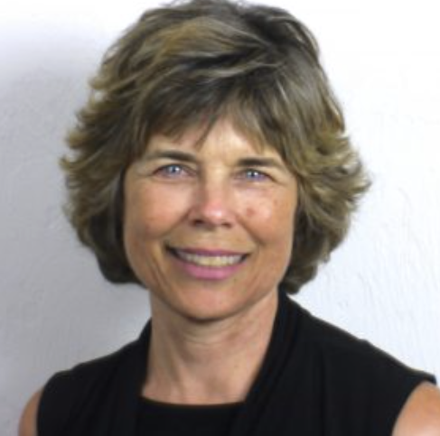

University of Oregon, Eugene, OR, USA / Scientific and Medical Network, London, England, United Kingdom

Previous studies have offered a strong basis for the understanding that conscious or mental awareness is constrained by neural filters, including the ascending reticular activating system, thalamus, default mode network (DMN), and left hemisphere language centers. Experiments indicate that these filters limit perception to a narrow range of energy frequencies, creating the sensation of space/time, and prioritize internally generated narratives (associated with language and conceptuality). When the activity within these filters is reduced (e.g., through near-death experiences, meditation, or psychedelic compounds), individuals gain access to a wider nonlocal awareness. This expanded mental horizon is believed to allow the mind to connect with a broader information field, potentially enabling access to information beyond the five senses (Weiler and Woollacott, 2025). In addition, preliminary studies examining telepathic abilities in nonspeaking autistic children indicate that their abilities to access nonlocal information are extremely potent, with scores at 95-100% for telepathic accuracy, compared to that of typical individuals (~5% above chance) (Woollacott et al, 2025). Methods: To explore the nature of these perceptions in a wider population of individuals with nonspeaking autism, web-based recorded video interviews with 16 individuals (mean age 25 yrs) and their families were made based on a quantitative and qualitative questionnaire. Communication with the individuals was through letterboard or keyboard. Results: Two-thirds of the autistic individuals stated they knew they were telepathic from the moment they were first aware ("Ever since I can remember"). However, parents were typically not aware of their child's telepathy until they learned to communicate through the letterboard, with physical evidence they were reading the parent's/therapist's mind. 93% were telepathic with their primary caregiver and many others. And two-thirds said they communicated with each other on the "Hill" ("All of us talk to each other. It's called the talk on the hill." One son spelled of another child, 'He's my best friend' — before having any contact). Two-thirds said that telepathy was possible at any distance ("My mind can travel great distances, hear and see what I need to see and hear"). Telepathic information was received visually, auditorily or simply as a shared consciousness or as energy ("I can hear her words verbatim; I can see the images that are rapidly evolving in her mind; I can also feel her emotions and her physical body"). It is interesting that 2/3's perceived a collective consciousness, which was identified as a Higher Self, Mind, Light/energy, or God ('All connected to everything by energy'). Finally, when asked how learning to spell had affected their lives, the vast majority said their life had completely changed. One said: "It was a game changer for me. It provided me with freedom I dreamed about for 15 years now. Instead of being an observer, I am an active participant." We conclude that the detailed responses from these individuals—long dismissed as cognitively deficient—show, beyond the evidence for their telepathy and nonlocal communication, the richness of their abilities, and their desire to share their insights with others.
Marjorie Woollacott is an American neuroscientist, author, member of the Institute of Neuroscience and Emeritus Professor of Human Physiology at the University of Oregon. She is known for her interdisciplinary research in neuroscience, motor control, rehabilitation, meditation, and consciousness studies. She served as chair of the Human Physiology Department at the University of Oregon and currently serving as the Research Director for the International Association for Near-Death Studies and President of the Academy for the Advancement of Postmaterialist Sciences.